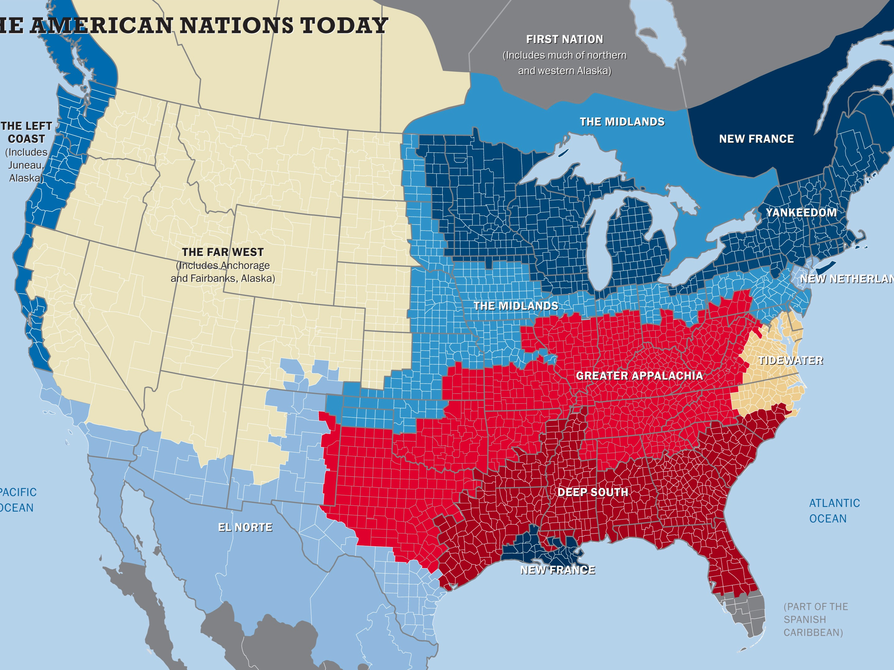
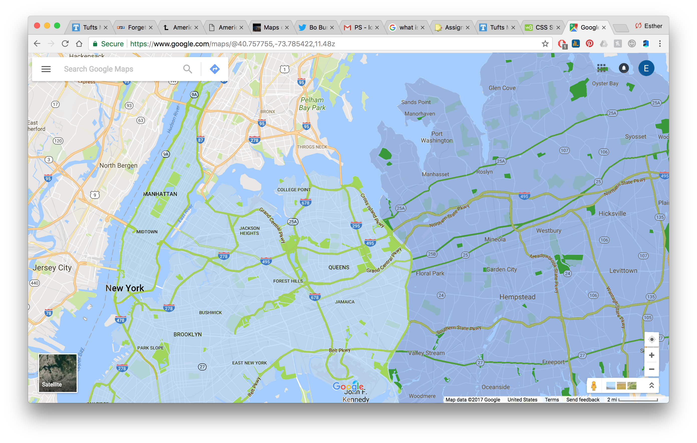

American Nations, Colin Woodard
Yankeedom
New Netherland
The Midlands
Tidewater
Greater Appalachia
Deep South
El Norte
The Left Coast
The Far West
New France
First Nation
More Reading
Up in Arms, Colin Woodard
Forget The 50 States; The U.S. Is Really 11 Nations, Author Says, NPR
American Nations, Liberapedia
Religions of the American Nations
Maps of the American Nations
